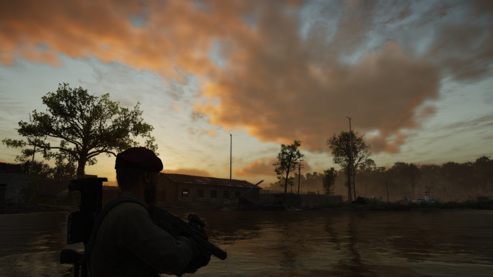
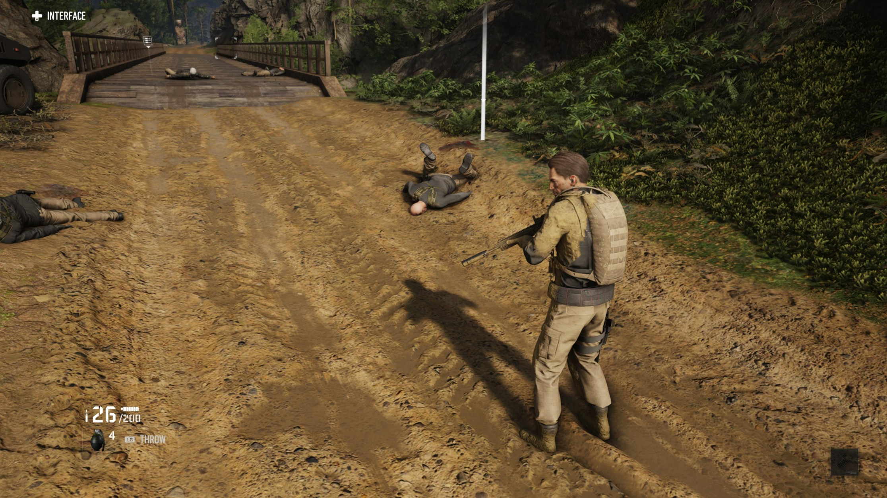
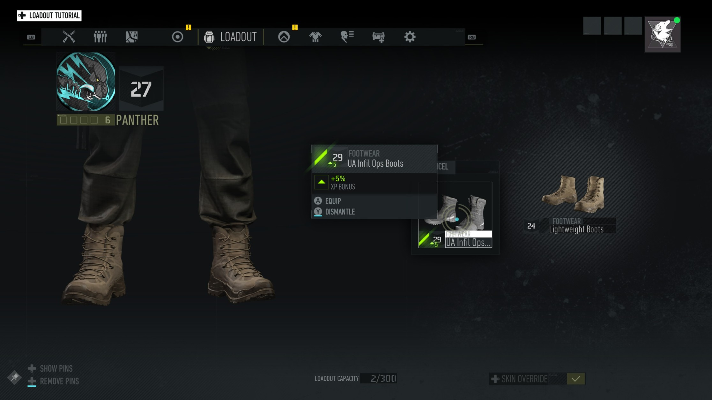
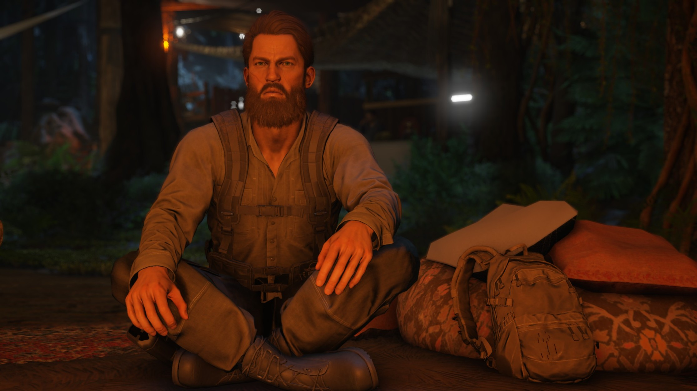

March 25, 2020

This summer will mark a full decade that I’ve been writing about technology, games, and politics. But of all the topics I’ve covered, the games industry has always been the the funnest to document and respond to. Which isn’t to say our national politics are boring, but it’s always been too much of a spectator sport for me.
Covering games, on the other hand, is a full-contact sport with a lot of colorful personalities, vastly diverse communities, and complete and utter meltdowns. It’s a several billion dollar free-for-all with raging nerds, genius designers, and rapidly evolving technology. If hunting for and telling interesting stories is my profession, then the games industry is the most dangerous and entertaining prey.
Recently, I had the misfortune of paying $19.99 for Ubisoft’s much-maligned tactical shooter, Ghost Recon Breakpoint. To delve into its specific gameplay flaws and sins would be satisfying, but not particularly interesting. Long story short, the primary gameplay loop of ‘kill dudes to get more gear to kill dudes faster to get more gear faster to kill more dudes the fastest’ is stale and not particularly engaging and, at times, wholly infuriating.

But looking past the product’s flaws and at the design philosophy of the product itself is where things get interesting. Breakpoint follows a familiar Ubisoft template: A large open world ripe for players to explore and wreak havoc upon at their leisure. Like Far Cry, Assassins Creed, and the Division, Breakpoint is a slick amusement park intended for a military simulation fetishist audience, of which I admit to tacitly being a member of.
Unfortunately for its developers, the newest Ghost Recon does little to mask its online Skinner box and paper doll simulator qualities. The game makes no effort to hide the fact its players are little more than account numbers meant to partake in micro-transactions and engage with social online hooks. Most infuriating is the fact the entire game seems to be balanced solely around cooperative or player-versus-player tactical shooting. Which would make sense if The Division 2 wasn’t positioned in exactly the same vertical, but with none of the baggage of the Ghost Recon brand.
See, the Division 2 doesn’t need to hide what it is. It’s an open world looter-shooter in the vein of Destiny or Warframe. Which is fine. The previous Ghost Recon outing, Wildlands, at least had the pretense of being a squad-based tactical shooter without the trappings of random loot drops, gear levels, or mandatory co-op, and it largely worked for me, despite a few nitpicks.

But when it comes to the unfortunately-titled Breakpoint, the formula was too thin to hide the hollow game underneath. Skinner boxes work on the premise that the rewards they dispense are worth whatever it takes to push the button. But when I play Breakpoint, all I see are the minutes and hours I’ve wasted trying to play it like actual tactical shooters, like Metal Gear Solid V or even Swat 4.
Breakpoint isn’t just an isolated commercial failure, it’s a bellwether for the industry as a whole. Judging from the coverage of the game thus far, my opinion of the game isn’t a lone voice in the night. Even Fallout 76, Bethesda’s looter shooter, has done more to put players first than any of the major overhauls for Breakpoint. In 76’s case, players literally get to build upon the world and let others see their creations. Recon, on the other hand, is content to dispense with any meaningful player contributions to the world except for capping generic mercenaries, who will later respawn anyway.

While there are cuss-laden write-ups about Breakpoint, the reality is that I’m simply disappointed with its execution. There are glimmers of hope that the game can be righted by its developers; an update rolled out this week offers the ability to strip out loot levels and gear entirely. But the core game itself is so thin and hollow, so enmeshed with its sloppy social integrations and micro-transactions that I see no real way to salvage the product and the damage it’s caused.
I paid Ubisoft $20 and I’ve gotten 12 so-so hours of lukewarm gameplay, and a few hellish minutes of swearing and rage. Ubisoft has eight hours left of my time before I uninstall this fundamentally broken mess. The only confidence I feel about this game is that I’ll be able to get around 50 gigabytes of space back from my SSD for another game that respects my time.